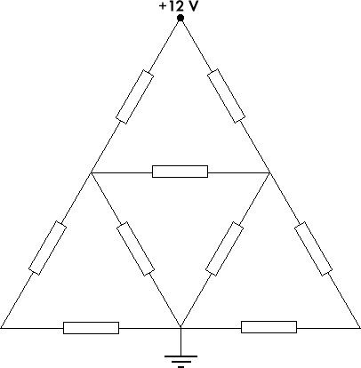

FyB: Test 2
Självtest
Lös uppgifterna i ditt "god-fysik-häfte".
- Hur "snabbt" kan du viktiga definitioner och begrepp? Testa dig själv i "Faktastress".
- Vad menas med en magnets nordända?
- Hur hänger följande begrepp ihop: nordpolen, jorden magnetiska nordpol,...
Utmaningar
För dig som strävar efter VG eller MVG kommer några undersökande fördjupningsuppgifter att erbjudas på kursens olika moment. Uppgifterna ska rapporteras självständigt men du får (t.o.m. "bör") gärna diskutera dem med mig eller någon annan när du planerar ditt arbete.
Välj en av följande uppgifter och utför den i grupp om max två personer. Sista dag för inlämning och redovisning för den som vill få dem bedömda för denna kurs, är mån 23 april 2001.
OBS! Av säkerhetsskäl måste du rådgöra med lärare innan du börjar experimentera med elektricitet.
- Hur gör man en kondensator?
Gör din egen kondensator med hjälp av aluminiumfolie, papper och ev. annat material. Bestäm kapacitansen på din kondensator genom experiment och jämför med ett teoretiskt beräknat värde. Kondensatorn inlämnas tillsammans med en rapport som beskriver dina undersökningar och resultat.
- När sker överslag i luft?
Undersök (på ett säkert sätt!) vid vilken fältstyrka överslag sker i luft. Rapporten ska ange de saker du anser är viktiga för resultatet och varför.
- Hur uppkommer åska?
Ta reda på vad man idag vet om åska och hur den uppkommer. Vilka är de dominerande teorierna och hur pass säker är man på dem? Sammanställ materialet för publicering på dessa fysiksidor, gärna med länkar till andra webbsidor som du kvalitetsgranskat.
- Hur räknar man på komplicerade kretsar – på ett enkelt sätt?
Använd Kirchhoffs lagar för att sätta upp ett ekvationssystem för kretsen nedan och lös systemet med hjälp av programmet Matlab (som används på samtliga tekniska högskolor och även universitet i Sverige). Välj själv värden på de nio resistorerna och beräkna kretsens totala effektförbrukning.

PDL, Luspengymnasiet, Skolgatan 20, 923 81 Storuman
Senast ändrad: tis 24 okt 2000 14.27.27.